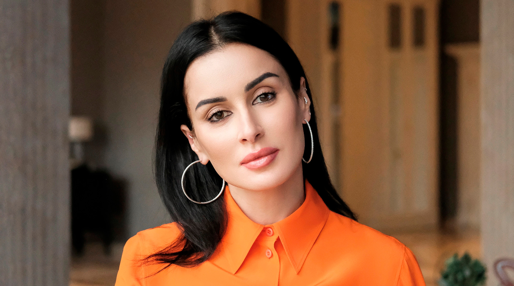

Генеральный директор Match TV.
Телеведущая, рождённая в Тбилиси — голос Москвы.

10 ноября 1975 года в Тбилиси, Грузинской ССР. Имя при рождении — Тина Гивиевна Канделаки. Грузинское происхождение стало впоследствии неловким фоном для её провоенной позиции: в 2008 году Россия воевала с Грузией — страной её рождения.
Переезжает в Москву. Работает журналистом и ведущей на региональных каналах. Яркая, агрессивно харизматичная — быстро замечена федеральными редакторами. Эпоха 90-х формирует её стиль: громко, ярко, на публику.
Ведёт интеллектуальную игровую программу «Самый умный» на СТС. Программа становится хитом. Канделаки — знаменитость. Параллельно — работа на ТВ-3, многочисленные ток-шоу. Репутация «умной телеведущей» позволяет говорить о политике с претензией на экспертность.
В августе 2008 года Россия начинает войну с Грузией. Для Канделаки — страны её рождения. Она не выступает против войны. Публично поддерживает российскую позицию. Это первый ясный сигнал о её политических приоритетах: карьера в России важнее происхождения. Интерпр.
Становится исполнительным продюсером и впоследствии — заместителем гендиректора Газпром-Медиа. Переход от телеведущей к медиаменеджеру. Газпром-Медиа — крупнейший медиахолдинг страны, контролируемый государством.
Назначена генеральным директором Match TV — государственного спортивного канала. Под её руководством канал расширяется: трансляции FIFA, UFC, всех крупных турниров. Спортивный канал кажется нейтральным — но его менеджмент активно участвует в государственном медиапространстве.
После 24 февраля Канделаки становится одним из наиболее активных провоенных голосов в российских соцсетях. Её телеграм-канал и публичные высказывания — агрессивная поддержка «операции», антиукраинская риторика, оправдание бомбардировок. ЕС вводит персональные санкции. Факт
Канделаки — один из наиболее активных российских медиафигур в Telegram. Миллионная аудитория. Высказывания о войне, критика Запада, поддержка российской армии — регулярный контент. Грузинское происхождение никогда не упоминается. Интерпр.
В отличие от осторожных кремлёвских чиновников, Канделаки говорит импульсивно и громко. Именно поэтому её слова особенно ценны — они показывают «нижний слой» провластной пропаганды.
Match TV транслирует футбол, хоккей, UFC. Аудитория приходит за спортом. Но менеджмент канала — часть государственной медиаструктуры. Спортивный патриотизм («наши выиграли») плавно переходит в политический («наши правы»).
Личный Telegram-канал Канделаки — прямая пропаганда без редакции и фильтра. Миллионы подписчиков получают смесь лайфстайла, провоенных заявлений и антизападной риторики. Это «мягкая сила» без мягкости.
Образ интеллектуальной телеведущей («Самый умный») работает как сертификат доверия для политических высказываний. «Умный человек так говорит — значит, это правда». Риторическая легитимность через биографию.
Рождённая в Грузии, чья страна была атакована Россией в 2008 году, — и одна из самых активных провоенных голосов в 2022-м. Этот парадокс показывает, как карьерный и идеологический выбор вытесняет любую другую идентичность.
«Канделаки — пример того, как умный и обаятельный медийный человек может быть опаснее прямолинейного пропагандиста. Она убедительнее Скабеевой именно потому, что не выглядит как пропагандист.»
«ЕС внёс её в санкционный список как лицо, несущее ответственность за распространение дезинформации в поддержку российской агрессии против Украины.»
«Она грузинка, которая поддерживала войну с Грузией и войну с Украиной. Идентичность уступила карьере. Это трагедия — или выбор. Сложно сказать, что хуже.»
Все утверждения основаны на открытых публичных источниках. Факт — прямые первичные источники. Интерпр. — авторская интерпретация.